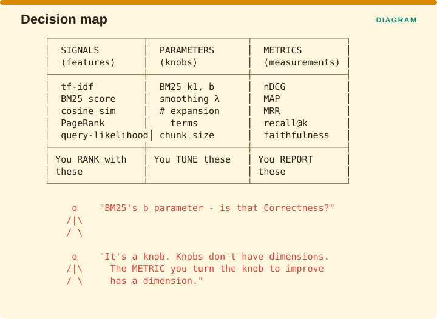

Measuring Retrieval › Chapter 3 - Signals Are Not Metrics
Chapter 3 - Signals Are Not Metrics
3.1 The category error
The biggest structural fault in most metric catalogues is that they mix three completely different kinds of thing into a single table and treat them all as measurements.

The figure separates them into three columns. Signals are features you rank with, such as tf-idf, a BM25 score, cosine similarity, PageRank or query likelihood. Parameters are knobs you tune, such as BM25’s k1 and b, a smoothing value, the number of expansion terms, or your chunk size. Metrics are measurements you report, such as nDCG, MAP, MRR, recall@k or faithfulness. The three columns have different jobs: you rank with the first, you tune the second, and you report the third.
Once they are separated, a question that gets asked constantly stops making sense. Asking which dimension BM25’s b parameter belongs to is the same kind of question as asking what color the number seven is. The b parameter controls how much BM25 discounts long documents, and you adjust it in order to push nDCG up. nDCG belongs to a dimension. The knob you turned to improve it does not.
3.2 Why this matters practically
Mixing the three does three concrete kinds of damage.
It corrupts your dimension counts. If eleven of the things you have filed under correctness are actually ranking features, then your correctness coverage is far thinner than the table suggests, and you will not notice because the table looks full.
It invites optimizing the wrong object. Teams start reporting that their BM25 score improved, which is not a statement about quality at all. Raw retrieval scores cannot be compared across different queries, across different collections, or even across two rebuilds of the same index, because the score is only meaningful relative to the other documents it was computed alongside.
It hides genuine gaps. A catalogue padded out with signals looks comprehensive. Strip the signals out and the real measurement coverage is often thin, particularly in the alignment and integrity dimensions where the metrics are newest and fewest.
3.3 The test
There is a single question that sorts them reliably.

Ask whether you could put this number in a quarterly report as evidence that the system is good. Saying that your nDCG@10 is 0.71 passes, because it is a claim about quality that someone could act on. Saying that your BM25 b is 0.75 does not, because it describes a setting rather than an outcome. Saying that your mean cosine similarity is 0.83 also does not, and this is the one people get wrong. If the honest response to your number is “and?”, then what you have is not a metric.
The cosine similarity case is worth dwelling on, because it feels like a quality measurement and gets reported as one constantly. Cosine similarity measures how close the retrieved chunks are to the query in the embedding space, so a retriever that returns five nearly identical chunks, all of them irrelevant, can post a high average similarity. Similarity to the query is the signal the ranking was built from, and asking whether the ranking was any good is a separate measurement that requires someone to have judged which documents were actually relevant.
3.4 The one legitimate exception
There is a way for a knob to enter the metrics column, and it is by measuring the difference the knob makes rather than reporting its setting. Relevance feedback effectiveness, meaning the change in MAP that results from applying Rocchio’s method, is a genuine alignment measurement, because it tells you something about how well two parts of the system are cooperating.
| Not a metric | Metric |
|---|---|
| Rocchio α, β, γ values | Δ MAP after relevance feedback |
| Number of expansion terms | Δ recall after query expansion |
| Chunk size | Δ Effective Use across chunk sizes |
| Embedding dimensionality | Δ nDCG across embedders |
The pattern running down the right column is the same in every row. A knob becomes a metric at the moment you stop reporting where you set it and start reporting the difference that setting made.
Measuring Retrieval · Madhava Gaikwad · First edition, September 2026